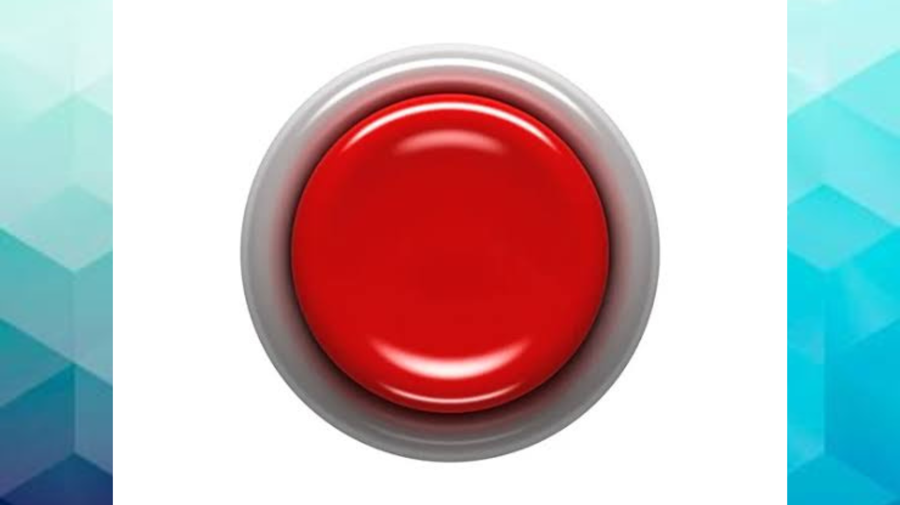
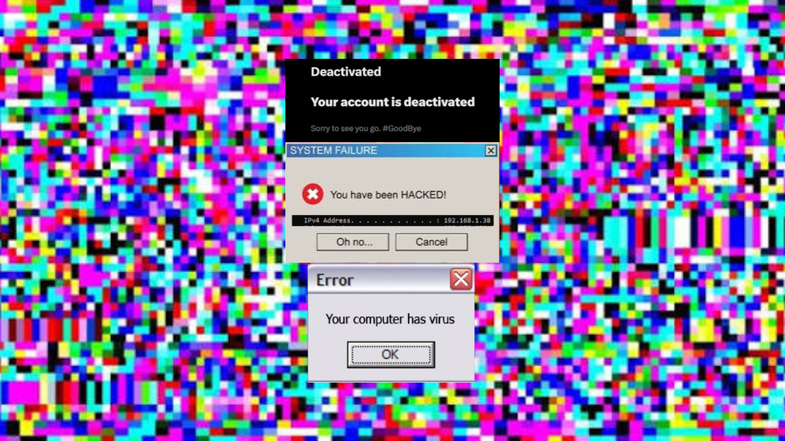

Kliknij tu żeby przejsc dalej

REC [KAMERA 1: AKTYWNA]
⚠️ KRYTYCZNY BŁĄD SYSTEMU ⚠️
Zablokowanie dysku za: 00:45
Usuwanie danych konta i plików systemowych...
Postęp: 0%
Twoja przeglądarka nie obsługuje audio.